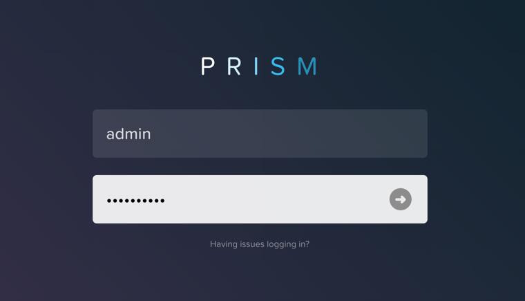

Prism Element¶
Prism รองรับการทำงานผ่าน Web UI ใช้สำหรับบริหารจัดการ Nutanix Clusters, Prism จะถูกติดตั้งในทุกๆ Controller VM (CVM) และจะเรียกว่า Prism Element สามารถเรียกใช้งานด้วย IP ของทุกๆ CVM หรือ Virtual IP ของ Nutanix Cluster
สามารถเข้าใช้งาน PRISM ด้วย URL: https://<NUTANIX-CLUSTER-IP>:9440
เข้าสู่ระบบโดยการกรอกข้อมูล credentials:
Username - admin
Password - จาก Lab Guide Home
หลังจาก log in เข้าสู่ Prism Element. ให้เราใช้งานผ่าน Prism UI ศึกษารายละเอียดต่างๆในหน้า Home และหน้าอื่นๆ
ให้ลองใช้ Home screen และศึกษาการทำงานในส่วนต่างๆดังต่อไปนี้:
Hypervisor
Version
Hardware Model
Health
VM Summary
Warning Alerts
Data Resiliency Status
ตรวจสอบเมนูต่างๆ โดย คลิกที่ Home
ตรวจสอบ Hardware ที่อยู่ใน Cluster โดยไปที่ Home > Hardware, คลิก**Hardware**, แล้วคลิก**Diagram**.
ตรวจสอบข้อมูลและรายละเอียดต่างๆในส่วนของ Hardware:
Blocks
Hosts
Memory
CPU
Disks
ลองตรวจสอบข้อมูลและรายละเอียดต่างๆในเมนูหัวข้อดังต่อไปนี้:
VM
Health
Network
Data Protection
Storage
Alerts
Etc.
ลองตรวจสอบ icons บน toolbar ต่างๆในหัวข้อดังต่อไปนี้
= Health
= Alarms
= Tasks
= Search
= Help
= Configuration
= User

Note
จากภาพด้านบน อาจจะมีความแตกต่างจาก Lab ที่ผู้เรียนใช้งาน ไม่มีผลใดๆ ต่อการทำ Lab.
Prism Element UI Review¶
เราสามารถตรวจสอบ AOS version ที่ใช้งานอยู่ปัจจุบันได้จากที่ไหน?
เราสามารถตรวจสอบโดยการคลิกที่ User drop down ที่อยู่มุมบนขวา, แล้วคลิกที่ About Nutanix.
เราสามารถตรวจสอบ จำนวน Host หรือ Node และ Capacity ที่ใช้งานอยู่ในปัจจุบันได้จากที่ไหน?

สามารถตรวจสอบได้โดยไปที่เมนู แล้วเลือก Hardware, แล้วคลิก**Table**.
เราสามารถตรวจสอบ สุขภาพ(Health) ของระบบได้จากที่ไหน?

เราสามารถตรวจสอบได้โดยการไปที่เมนู แล้วเลือก Health, คลิก**Summary** ทางด้านขวา.
สามารถตรวจสอบข้อมูลขั้นตอนการทำงานล่าสุดของระบบได้จากที่ไหน?

ในหน้านี้เราสามารถ ตรวจสอบการทำงานต่างๆในแต่ละส่วนของระบบทั้งปัจจุบันและที่ทำงานเสร็จสิ่นไปแล้วได้ 2 วิธี
เราสามารถตรวจสอบได้โดยการไปที่เมนู แล้วเลือก Tasks, หรือคลิกที่เครื่องหมาย ใน toolbar, ที่อยู่ด้านขวามือของเครื่องหมาย .